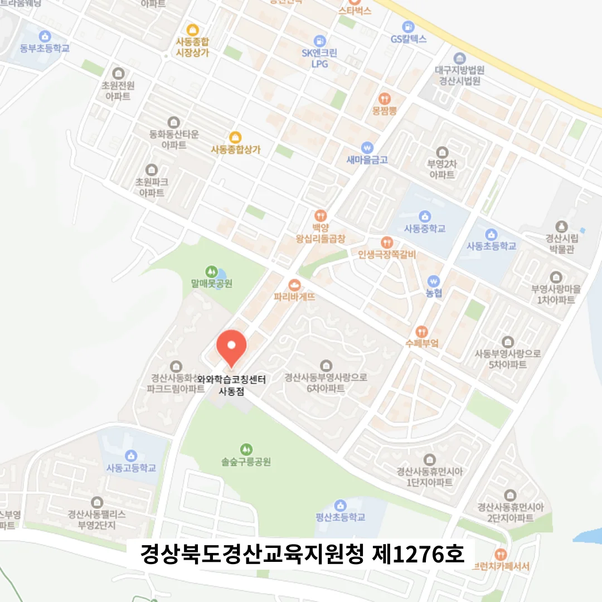

경산사동 중2 과학학원
경산사동 중2 과학학원
계획을 세울 때 공부 시간만을 최우선으로 삼기보다, 개인의 생체 리듬, 감정 상태, 가정 환경을 고려해 유연하게 조율하면 지속 가능성이 높아지고 무리한 몰입이 피로로 이어지지 않는다. 또한, 개인 학습 보고 일정을 고정하여 매주 특정 요일과 시간에 학습 현황을 점검하면 책임감이 강화되며, 이는 마치 건강검진처럼 자기 상태를 객관적으로 바라보는 기회가 된다. 이처럼 실수 유형을 개인별로 분류하면 동일한 실수가 반복되기 쉽지 않으며, 자신의 사고 방식을 조정하는 데 큰 도움이 된다. 이러한 행동 중심의 접근은 학습 흐름을 끊임없이 이어가게 하여, 학습 습관이 점진적으로 안정화되는 효과를 만든다. 특히 학원가의 시끄러운 중심부가 아닌 한쪽 끝, 조용한 자리에 위치한 프로그램은 외부 간섭 요인을 최소화하면서 자연스럽게 몰입 상태에 들어가게 돕는다. 교재는 본문 옆에 필기 여백을 충분히 배치해 학생이 수업 중에 즉시 생각을 정리할 수 있도록 유도하며, 이 여백이 학습의 ‘생산성’을 높이는 핵심 도구가 된다. 학습에 대한 열정을 유지하기 위해서는, 여러 가지 요인이 필요합니다.